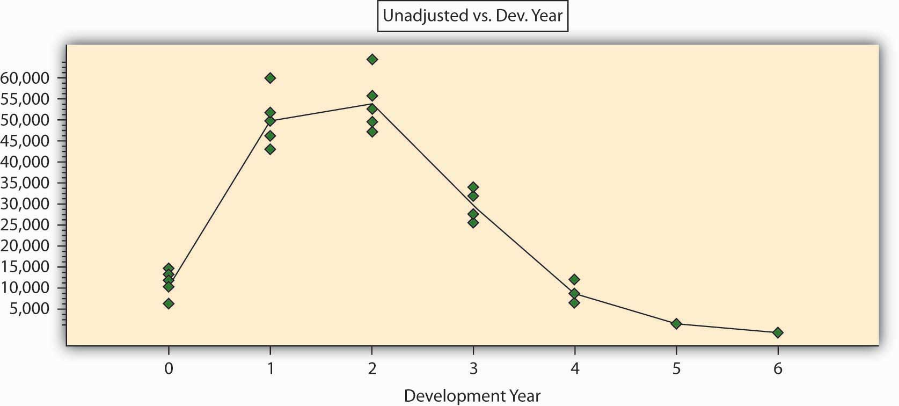

The actuarial estimation in loss reserving is based on data of past claim payments. This data is typically presented in the form of a triangle, where each row represents the accident (or underwriting) period and each column represents the development period. Table 7.11 "A Hypothetical Loss Triangle: Claim Payments by Accident and Development Years ($ Thousand)" represents a hypothetical claims triangle. For example, the payments for 2006 are presented as follows: $13 million paid in 2006 for development year 0, another $60 million paid in development year 1 (i.e., 2007 = [2006+1]), and another $64 million paid during 2008 for development year 2. Note, that each diagonal represents payments made during a particular calendar period. For example, the last diagonal represents payment made during 2008.
Table 7.11 A Hypothetical Loss Triangle: Claim Payments by Accident and Development Years ($ Thousand)
| Development Year | |||||||
|---|---|---|---|---|---|---|---|
| Accident Year | 0 | 1 | 2 | 3 | 4 | 5 | 6 |
| 2002 | 9,500 | 50,500 | 50,000 | 27,500 | 9,500 | 5,000 | 3,000 |
| 2003 | 13,000 | 44,000 | 53,000 | 33,500 | 11,500 | 5,000 | |
| 2004 | 14,000 | 47,000 | 56,000 | 29,500 | 15,000 | ||
| 2005 | 15,000 | 52,000 | 48,000 | 35,500 | |||
| 2006 | 13,000 | 60,000 | 64,000 | ||||
| 2007 | 16,000 | 47,000 | |||||
| 2008 | 17,000 | ? | |||||
The actuarial analysis has to project how losses will be developed into the future based on their past development. The loss reserve is the estimate of all the payments that will be made in the future and is still unknown. In other words, the role of the actuary is to estimate all the figures that will fill the blank lower right part of the table. The actuary has to “square the triangle.” The table ends at development year 6, but the payments may continue beyond that point. Therefore, the actuary should also forecast beyond the known horizon (beyond development year 6 in our table), so the role is to “rectanglize the triangle.”
The actuary may use a great variety of triangles in preparing the forecast: the data could be arranged by months, quarters, or years. The data could be in current figure or in cumulative figures. The data could represent numbers: the number of reported claims, the number of settled claims, the number of still pending claims, the number of closed claims, and so forth The figures could represent claim payments such as current payments, payments for claims that were closed, incurred claim figures (i.e., the actual payments plus the case estimate), indexed figures, average claim figures, and so forth.
All actuarial techniques seek to identify a hidden pattern in the triangle, and to use it to perform the forecast. Some common techniques are quite intuitive and are concerned with identifying relationships between the payments made across consecutive developing years. Let us demonstrate it on Table 7.11 "A Hypothetical Loss Triangle: Claim Payments by Accident and Development Years ($ Thousand)" by trying to estimate the expected payments for accident year 2008 during 2009 (the cell with the question mark). We can try doing so by finding a ratio of the payments in development year 1 to the payments in development year 0. We have information for accident years 2002 through 2007. The sum of payments made for these years during development year 1 is $300,500 and the sum of payments made during development year 0 is $80,500. The ratio between these sums is 3.73. We multiply this ratio by the $17,000 figure for year 2008, which gives an estimate of $63,410 in payments that will be made for accident year 2008 during development year 1 (i.e., during 2009). Note that there are other ways to calculate the ratios: instead of using the ratio between sums, we could have calculated for each accident year the ratio between development year 1 and development year 0, then calculated the average ratio for all years. This would give a different multiplying factor, resulting in a different forecast.
In a similar way, we can calculate factors for moving from any other development period to the next one (a set of factors to be used for moving from each column to the following one). Using these factors, we can fill all other blank cells in Table 7.11 "A Hypothetical Loss Triangle: Claim Payments by Accident and Development Years ($ Thousand)". Note that the figure of $63,410 that we inserted as the estimate for accident year 2008 during development year 1 is included in estimating the next figure in the table. In other words, we created a recursive model, where the outcome of one step is used in estimating the outcome of the next step. We have created a sort of “chain ladder,” as these forecasting methods are often referred to.
In the above example, we used ratios to move from one cell to the next one. But this forecasting method is only one of many we could have utilized. For example, we could easily create an additive model rather than a multiplicative model (based on ratios). We can calculate the average difference between columns and use it to climb from one cell to the missing cell on its right. For example, the average difference between the payments for development year 1 and development year 0 is $36,667 (calculated only for the figures for which we have data on both development years 0 and 1, or 2002 through 2007). Therefore, our alternative estimate for the missing figure in Table 7.11 "A Hypothetical Loss Triangle: Claim Payments by Accident and Development Years ($ Thousand)", the payments that are expected for accident year 2008 during 2009, is $53,667 ($17,000 plus $36,667). Quite a different estimate than the one we obtained earlier!
We can create more complicated models, and the traditional actuarial literature is full of them. The common feature of the above examples is that they are estimating the set of development period factors. However, there could also be a set of “accident period factors” to account for the possibility that the portfolio does not always stay constant between years. In one year, there could have been many policies or accidents, whereas in the other year, there could have been fewer. So, there could be another set of factors to be used when moving between rows (accident periods) in the triangle. Additionally, there could also be a set of calendar year factors to describe the changes made while moving from one diagonal to the other. Such effects may result from a multitude of reasons—for example, a legal judgment forcing a policy change or inflation that increases average payments. A forecasting model often incorporates a combination of such factors. In our simple example with a triangle having seven rows, we may calculate six factors in each direction: six for the development periods (column effects), six for the accident periods (row effects), and six for the diagonals (calendar or payment year effects). The analysis of such a simple triangle may include eighteen factors (or parameters). A larger triangle (which is the common case in practice) where many periods (months, quarters, and years) are used involves the estimation of too many parameters, but simpler models with a much smaller number of factors can be used (see below).
Although the above methods are very appealing intuitively and are still commonly used for loss reserving, they all suffer from major drawbacks and are not ideal for use. Let us summarize some of the major deficiencies:
There are modern actuarial techniques based on sophisticated statistical tools that could be used for giving better forecasts while using the same loss triangles.The interested reader should seek out publications by Professor B. Zehnwirth, a pioneer of the approach described, in actuarial literature. One of the authors (Y. Kahane) has collaborated with him, and much actuarial work has been done with these tools. The approach is now well accepted around the world. The graph was derived using resources developed by Insureware Pty. (www.insureware.com). Let us see how this works without engaging in a complicated statistical discussion. The purpose of the discussion is to increase the understanding of the principles, but we do not expect the typical student to be able to immediately perform the analysis. We shall largely leave the analysis to actuaries that are better equipped with the needed mathematical and statistical tools.
A good model is evaluated by its simplicity and generality. Having a complex model with many parameters makes it complicated and less general. The chain ladder models that were discussed above suffer from this overparameterization problem, and the alternative models that are explained below overcome this difficulty.
Let us start by simply displaying the data of Table 7.11 "A Hypothetical Loss Triangle: Claim Payments by Accident and Development Years ($ Thousand)" in a graphical form in Figure 7.3 "Paid Claims (in Thousands of Dollars) by Development Year". The green dots describe the original data points (the paid claims on the vertical axis and the development years on the horizontal axis). To show the general pattern, we added a line that represents the averages for each development year. We see that claim payments in this line of business tend to increase, reach a peak after a few years, then decline slowly over time and have a narrow “tail” (that is, small amounts are to be paid in the far future).
Figure 7.3 Paid Claims (in Thousands of Dollars) by Development Year
We can immediately see that the entire claims triangle can be analyzed in a completely different way: by fitting a curve through the points. One of these tools to enable this could be regression analysis. Such a tool can give us a better understanding of the hidden pattern than does the chain ladder method. We see that the particular curve in our case is nonlinear, meaning that we need more than two parameters to describe it mathematically. Four parameters will probably suffice to give a mathematical function that will describe the pattern of Figure 7.3 "Paid Claims (in Thousands of Dollars) by Development Year". The use of such methods can reach a level of sophistication that goes beyond the scope of this book. It is sufficient to say that we can get an excellent mathematical description of the pattern with the use of only four to six parameters (factors). This can be measured by a variety of statistical indicators. The coefficient of correlation for such a mathematical formula is above 95 percent, and the parameters are statistically significant.
Such an approach is simpler and more general than any chain ladder model. It can be used to forecast beyond the horizon, it can be statistically tested and validated, and it can give a good idea about the level of error that may be expected. When a model is based on a few parameters only, it becomes more “tolerant” to deviations: it is clear that the next period payment will differ from the forecast, but it will not force us to change the model. From the actuary’s point of view, claim payments are stochastic variables and should never be regarded as a deterministic process, so why use a deterministic chain ladder analysis?
It is highly recommended, and actually essential, to base the analysis on a noncumulative claims triangle. The statistical analysis does not offer good tools for cumulative figures; we do not know their underlying statistical processes, and therefore, we cannot offer good statistical significance tests. The statistical analysis that is based on the current, noncumulative claim figures is very sensitive and can easily detect turning points and changing patterns.
One last point should be mentioned. The key to regression analysis is the analysis of the residuals, that is, the differences between the observed claims and the figures that are estimated by the model. The residuals must be spread randomly around the forecasted, modeled, figures. If they are not randomly spread, the model can be improved. In other words, the residuals are the compass that guides the actuary in finding the best model. Traditional actuarial analyses based on chain ladder models regard variability as a corrupt element and strive to get rid of the deviations to arrive at a deterministic forecast. By doing so, actuaries throw away the only real information in the data and base the analysis on the noninformative part alone! Sometimes the fluctuations are very large, and the insurance company is working in a very uncertain, almost chaotic claims environment. If the actuary finds that this is the case, it will be important information for the managers and should not be hidden or replaced by a deterministic, but meaningless, forecast.